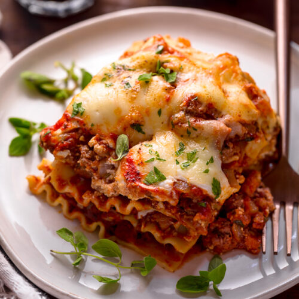

Lasagna

Description
The BEST easy, classic lasagna recipe made with a ground beef meat sauce, no- cook noodles, and cottage cheese for extra protein!
Ingredients
- Ground Beef: I used 93% lean ground beef.
- Onion: Dice half of a medium onion.
- Garlic: Mince three cloves.
- Tomatoes: You’ll need a 28-ounce can of crushed tomatoes. My favorite brand is Tuttorosso.
- Salt to season the tomatoes
- Noodles: Buy oven-ready lasagna noodles, such as Barilla’s, to make this easy lasagna with less steps.
- Eggs: Eggs help bind the cheese mixture in lasagna so it doesn’t run out when baked.
- Cottage Cheese: Use a good quality part-skim cottage cheese, like Good Culture, for extra protein.
- Mozzarella: Mix some part-skim shredded mozzarella in the lasagna filling and sprinkle the remainder on top.
- Grated Cheese: You’ll need a quarter cup of grated Pecorino Romano cheese or Parmesan cheese.
- Parsley: Add chopped fresh parsley into the cheese mixture and garnish with more.
Steps
- Make the Tomato Sauce: Add the ground beef, onion, and garlic to a large skillet or large pot and cook on medium-high until the meat is no longer pink. Pour in the crushed tomatoes and season with salt and pepper to taste. Cover the pan and simmer on low heat for 20 minutes, stir a few times.
- Make the Cheese Mixture: Beat the eggs in a large mixing bowl and add the cottage cheese, a half cup of mozzarella, Pecorino Romano, and parsley.
- How to Layer Lasagna: Spread a cup of meat sauce on the bottom of a 13-x-9- inch casserole dish, followed by four lasagna noodles, a third of the cheese mixture, and a cup of sauce, and repeat. Next, pour the remaining sauce on top and sprinkle with the rest of the mozzarella.
- How Long to Bake Lasagna: Cooking time is about 1 hour. Cover the baking dish tight with aluminum foil to create steam to cook the noodles, and bake for 55 to 60 minutes until the pasta is cooked through. Uncover and cook for another five minutes until all the cheese browns slightly.
- Serve: Garnish the lasagna with parsley and let sit for five minutes before cutting into eight pieces.
Variations
- Is lasagna better with ricotta or cottage cheese? Both are good in lasagna, but cottage cheese gives it a protein boost. You can substitute equal amounts of ricotta cheese if you prefer to make a ricotta cheese mixture.
- Pecorino: Substitute Pecorino with parmesan.
- Sausage: Use Italian sausage in place of ground beef.
- Add Meatballs: Use turkey meatballs or beef.
- Protein: Sub lean ground turkey for beef.
- Vegetarian Lasagna: Omit the beef and add thawed frozen spinach or sautéed diced zucchini.
- Gluten-Free Lasagna: Use gluten-free noodles.
- Egg Allergy? Skip the egg. The cheese filling may be a little runnier, but it'll still taste good!
- Herbs: Swap parsley with fresh basil.
What to Serve with Lasagna
This homemade lasagna recipe pairs well with some French bread, garlic bread or garlic knots and an Italian salad or veggies, like Roasted Broccoli and Cauliflower or Cacio e Pepe Brussels Sprouts.
How to Meal Prep Lasagna
- Meal Prep: Assemble the casserole, cover it with foil, and refrigerate it overnight. When ready to serve, bake the lasagna as instructed.
- Freeze Unbaked: Tightly cover the baking dish with plastic wrap and foil, and freeze it for up to three months. Thaw the unbaked lasagna in the fridge and bake according to the directions, or bake it from frozen for about 90 minutes until heated through. (Don't forget to remove the plastic first!)
- Leftovers: Leftover cooked lasagna will keep in the fridge for up to 4 days, or you can freeze it for up to 3 months. To thaw, refrigerate it overnight and microwave or bake until warm.